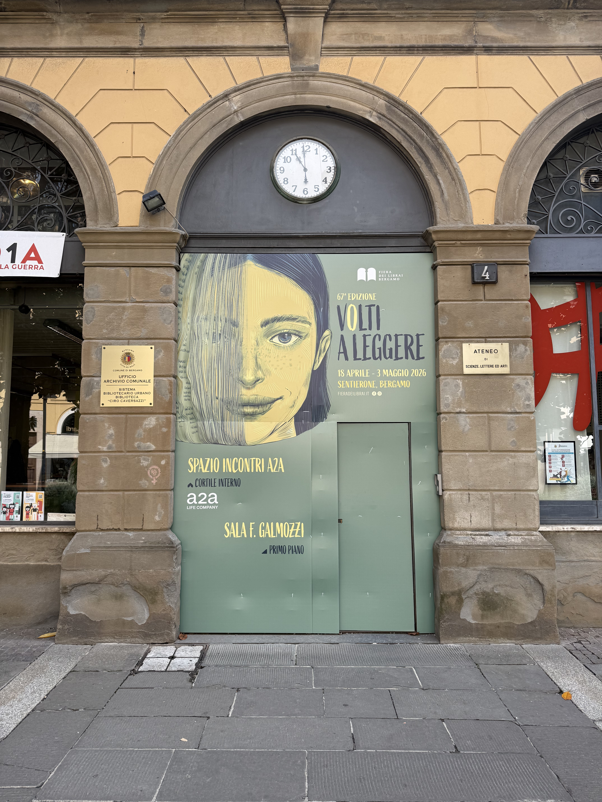
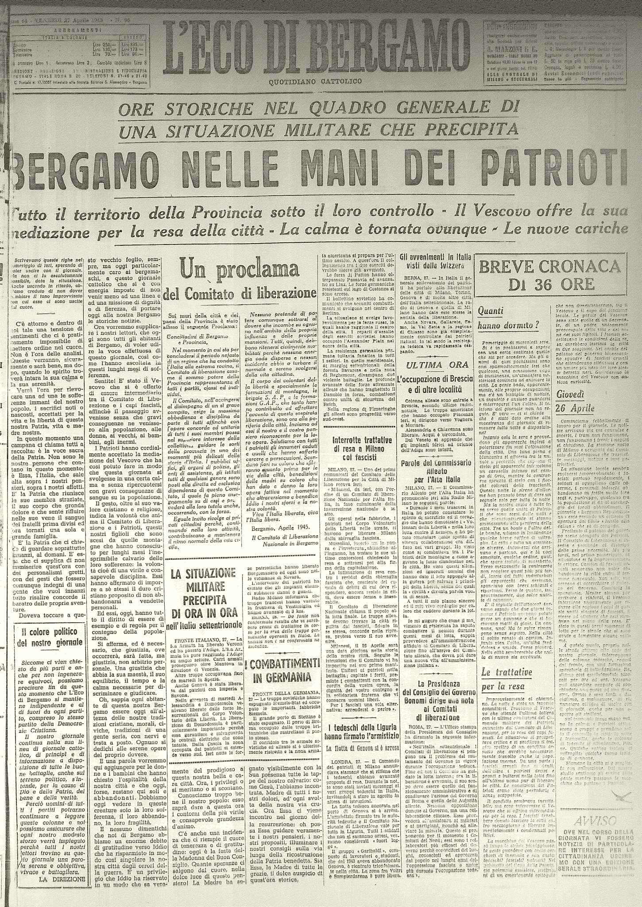

Il luogo oggi
La Biblioteca Ciro Caversazzi si trova in via Torquato Tasso 4, nel cuore di Bergamo. È una biblioteca pubblica: uno spazio di studio, lettura e incontro, aperto a tutti.
Chi entra oggi trova sale di consultazione, iniziative culturali, presentazioni e attività che valorizzano l’accesso libero al sapere. Proprio questo uso “aperto” rende il luogo significativo quando lo si collega alla sua storia: qui, in passato, si sono concentrati anche potere amministrativo e informazione politica.

🎧 Audio Lettura
Il luogo ieri
L’edificio che oggi ospita la biblioteca ha attraversato fasi cruciali della storia cittadina e nazionale. La sua biografia rende visibile un passaggio decisivo: da spazio del potere a spazio pubblico della cultura.
- 1855–1858: costruzione del palazzo in stile neoclassico (progetto dell’architetto Francesco Lodi).
- Per decenni: sede amministrativa e istituzionale della città (il palazzo fu noto anche come “Municipio Vecchio”, ospitando funzioni municipali e riunioni del Consiglio).
- 1943–1945: l’edificio diventa un centro della stampa politica. Dopo il 25 luglio 1943 ospita “La Voce di Bergamo” (fase dei “45 giorni”). Dopo l’8 settembre 1943, con occupazione tedesca e RSI, ospita il quotidiano del PFR “Bergamo Repubblicana”.
- 1948: la scelta di destinare questo spazio pubblico a biblioteca culmina nell’apertura ufficiale (16 ottobre 1948), segnando una volontà di ricostruzione civile fondata sulla cultura.
Questa sequenza non è solo una cronologia: mostra come, nello stesso edificio, si siano intrecciati istituzioni, informazione e poi democrazia culturale.
Contesto storico
Durante il ventennio fascista la comunicazione pubblica venne progressivamente ricondotta a un unico punto di vista: la stampa perse autonomia e divenne uno strumento centrale di costruzione del consenso. Nel controllo dell’opinione pubblica rientravano sia la censura (ciò che non doveva circolare) sia la propaganda (ciò che doveva “riempire” lo spazio pubblico).
Dopo l’8 settembre 1943, con l’occupazione tedesca e la nascita della Repubblica Sociale Italiana, la posta in gioco dell’informazione divenne ancora più evidente. È in questo scenario che anche edifici e luoghi cittadini, come questo palazzo, diventano “spie” dei cambiamenti: capire chi parla, da dove e con quali mezzi significa capire come si costruisce o si limita la libertà.
Anche a Bergamo circolò stampa illegale: secondo le ricostruzioni sulla comunicazione nella lotta di Liberazione, in città si diffusero almeno due fogli clandestini, “Bergamo proletaria” e “Italiani che si liberano”, prodotti e distribuiti in condizioni di rischio elevatissimo, tra tipografie improvvisate, staffette, affissioni notturne e reti di solidarietà.
La loro storia fu raccontata dopo la Liberazione. Esplora la prima pagina del giornale del 27 aprile 1945 che restituisce quelle ore.

Perché è un luogo della memoria
Questo luogo è significativo perché rende concreto il rapporto tra potere, informazione e democrazia. In particolare, tre aspetti lo fanno parlare di memoria.
-
Potere e informazione nello stesso edificio
La storia del palazzo mostra un passaggio netto: da sede amministrativa (luogo delle decisioni) a sede di giornali politici in guerra e occupazione (luogo del racconto “ufficiale” dei fatti). Questo intreccio aiuta a capire come il controllo dell’informazione sia parte del controllo della società. -
Controllo/propaganda vs libertà delle idee
Nel 1943–45 la stampa non è un semplice servizio: diventa uno strumento di legittimazione del potere. Ricordare questa dinamica serve oggi a riconoscere l’importanza del pluralismo, delle fonti, della verifica e del confronto. -
1948: la cultura come scelta democratica
Trasformare un luogo legato al potere e alla stampa politica in una biblioteca pubblica significa scegliere una ricostruzione civile basata su accesso libero al sapere e partecipazione. La memoria, qui, diventa un’azione: costruire cittadinanza attraverso conoscenza.
🎧 Audio Lettura
Approfondimenti
Comunicazione e Resistenza: perché “senza giornali” non bastava combattere
Nella lotta di Liberazione, la comunicazione aveva un valore strategico: informare significava rompere l’isolamento, rendere visibili occupazione e violenze, collegare gruppi diversi, costruire fiducia. La stampa clandestina, pur prodotta in condizioni difficilissime, fu uno strumento essenziale per raccontare la realtà “dal basso” e contrastare la versione imposta dal potere.
Nel caso di Bergamo, alcune ricostruzioni ricordano la circolazione di fogli illegali come “Bergamo proletaria” e “Italiani che si liberano”, a testimonianza di un bisogno concreto: creare una controinformazione nel cuore di una città controllata e militarizzata.
Episodi locali: reti e repressione (1943–1944)
Le fonti bergamasche mostrano quanto la stampa clandestina fosse legata a reti di persone, staffette e micro-azioni quotidiane:
- Salvo Parigi operò nella rete clandestina di Giustizia e Libertà e si impegnò nella diffusione di “Italia Libera”, organo del Partito d’Azione; fu arrestato dalle SS pochi giorni prima dell’insurrezione del 25 aprile 1945.
- Nella Banda Turani, oltre alle azioni dimostrative, era presente un lavoro di propaganda e produzione di materiale informativo; la repressione nazifascista colpì duramente il gruppo tra novembre 1943 e marzo 1944.
- La vicenda di Evaristo Locatelli mostra il rischio legato anche alla distribuzione di stampa clandestina: arresto, torture, processo e deportazione.
Collegare questi episodi a una biblioteca di oggi chiarisce un punto: la libertà di stampa non è “naturale” né garantita una volta per tutte. I luoghi culturali pubblici diventano spazi dove ricordare, capire e allenare il pensiero critico.
Video di contesto
Glossario
SS
Sigla di Schutzstaffel: organizzazione paramilitare e di polizia del regime nazista. Durante la guerra fu coinvolta nella repressione e in crimini contro l’umanità. (leggi di più)
Le SS nacquero nel 1925 e, sotto la guida di Heinrich Himmler, divennero un apparato centrale del controllo e del terrore nazista. Svolsero funzioni di polizia e repressione, gestirono campi di concentramento e furono responsabili di persecuzioni e crimini di massa.
Chi era Ciro Caversazzi
Ciro Caversazzi (1842–1906) fu una figura significativa della vita culturale bergamasca tra Otto e Novecento. Richiamare il suo nome significa richiamare un’idea: la cultura come bene pubblico e leva di emancipazione.
🎧 Audio Lettura
Fonti
- Tranfaglia N., Murialdi P., Legnani M.: La stampa italiana nell'età fascista, Laterza, Bari, 1980.
- Itinerari di memoria: (Mario Pelliccioli, 2023).
- Agenzia Comunica: L'importanza della comunicazione nella lotta di Liberazione. [agenziacomunica.net]
- ANPI Bergamo: Salvo Parigi (stampa clandestina, "Italia Libera", arresto prima del 25 aprile). [anpibergamo.it]
- Comune di Bergamo: "Tomba dei Partigiani" (schede biografiche, Banda Turani, stampa clandestina e repressione). [comune.bergamo.it]
- Memoria Urbana (ISREC BG): Il tentativo nazifascista di stroncare sul nascere la Resistenza (Banda Turani). [memoriaurbana.it]
- L'Eco di Bergamo: "Leggere insieme la Resistenza" (evento nel cortile della Biblioteca Caversazzi). [ecodibergamo.it]
- Biblioteca Civica Angelo Mai: Pagina commemorativa con prime pagine, titoli storici e documenti d'archivio relativi alla Liberazione di Bergamo. [bibliotecamai.org]
- Archivio Bergamasco: Quaderni di Archivio Bergamasco (QAB 8/9), note su palazzo Lodi e “Municipio Vecchio” (via T. Tasso 4). [archiviobergamasco.it]
- Clio ’92: Il Bollettino di Clio, n. 23 (Giugno 2025), scheda su Biblioteca Ciro Caversazzi e funzioni (La Voce di Bergamo, Bergamo Repubblicana, Giornale del popolo). [clio92.org]
- Lombardia Beni Culturali (SIRBeC): Scheda architetture “Palazzo Biblioteca Caversazzi” (apertura ufficiale 16 ottobre 1948). [lombardiabeniculturali.it]
- ISREC Bergamo: Bendotti, nota su Alfonso Vajana e direzione de “La Voce di Bergamo” nel 1943. [isrecbg.it]
- Bertagna, Federica: La patria di riserva (2006), riferimento ad Arturo Abati direttore di “Bergamo Repubblicana”. [anticabibliotecacoriglianorossano.it]